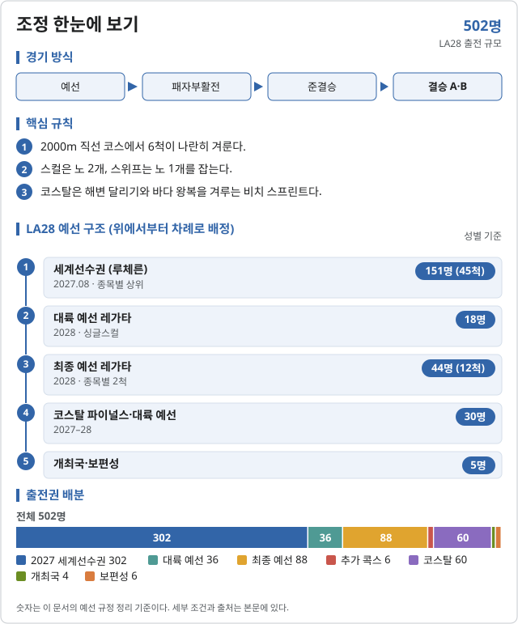
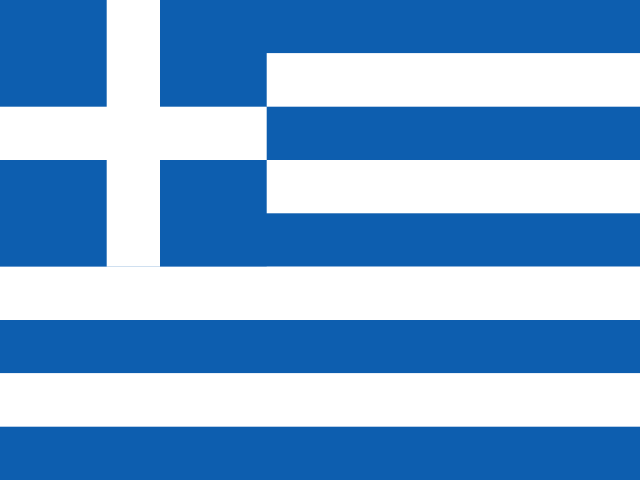

조정 (Rowing)
2028 LA 올림픽 조정에는 15개 세부종목이 있다.
- 조정 남자 싱글 스컬 · 남자 더블 스컬 · 남자 쿼드러플 스컬 · 남자 페어 · 남자 포어 · 남자 에이트 · 여자 싱글 스컬 · 여자 더블 스컬 · 여자 쿼드러플 스컬 · 여자 페어 · 여자 포어 · 여자 에이트
- 코스탈 조정 남자 비치 스프린트 솔로 · 여자 비치 스프린트 솔로 · 혼성 비치 스프린트 더블

2026 주요 대회 결과 2026-11-07 13:57 KST
위키백과 대회 문서에서 자동으로 모은다. 대회 중에는 한 시간마다 새로 읽는다. 한국 선수가 있는 줄은 붉게 칠했다. 하계 실시간 전체 →
아이치·나고야 아시안게임 아이치·나고야 · 09.23~09.24 종료 결과 14/14종목 · 한국 금0 은0 동1
| 종목 | 금 | 은 | 동 |
|---|---|---|---|
| 남자 | |||
| Single sculls | |||
| Double sculls | |||
| Quadruple sculls | |||
| Coxless pair | |||
| Coxless four | |||
| Lightweight single sculls | |||
| Lightweight double sculls | |||
| 여자 | |||
| Single sculls | |||
| Double sculls | |||
| Quadruple sculls | |||
| Coxless pair | |||
| Coxless four | |||
| Lightweight single sculls | |||
| Lightweight double sculls | |||
메달 순위:  중국 9-1-0 ·
중국 9-1-0 ·  이란 2-3-1 ·
이란 2-3-1 ·  우즈베키스탄 1-6-2 ·
우즈베키스탄 1-6-2 ·  홍콩 1-2-1 ·
홍콩 1-2-1 ·  카자흐스탄 1-0-0 ·
카자흐스탄 1-0-0 ·  인도네시아 0-2-0 ·
인도네시아 0-2-0 ·  베트남 0-0-4 ·
베트남 0-0-4 ·  일본 0-0-3 ·
일본 0-0-3 ·  대한민국 0-0-1
대한민국 0-0-1
출처: 위키백과 Rowing at the 2026 Asian Games · 2026-11-06 22:37 읽음
세계조정선수권 암스테르담 · 08.24~08.30 종료 결과 23/23종목 · 한국 금0 은0 동0
| 종목 | 금 | 은 | 동 |
|---|---|---|---|
| 남자 | |||
| Openweight events | |||
| Openweight events | |||
| Openweight events | |||
| Openweight events | |||
| Openweight events | |||
| Openweight events | |||
| Lightweight events |  Petros Gkaidatzis 그리스 6:47.77 | ||
| Lightweight events | |||
| 여자 | |||
| Openweight events | |||
| Openweight events | |||
| Openweight events | |||
| Openweight events | |||
| Openweight events | |||
| Openweight events | |||
| Lightweight events | |||
| Lightweight events | 그리스 7:12.05 | ||
| 혼성 | |||
| Pararowing | |||
출처: 위키백과 2026 World Rowing Championships · 2026-11-06 21:09 읽음
예선 규정
이벤트 및 출전 쿼터
조정 남녀 각 6종목과 코스탈 3종목, 전체 502명이 출전한다. 쿼터는 국가 올림픽위원회(NOC)에 배정되며 종목당 1척이다. 경량급 종목은 없다.
| 디시플린 (성별) | 일반쿼터 | 개최국쿼터 | 보편성쿼터 | 합계 |
|---|---|---|---|---|
| 조정 남·여 | 216 | 1 | 2 | 219 |
| 코스탈 남·여 | 30 | 1 | 1 | 32 |
| 합계 (남녀) | 492 | 4 | 6 | 502 |
조정 일반쿼터 216명 = 보트 선수 213 + 추가 콕스 3. 원문 B.1 표기(일반 217 · 보편성 1)와 배정표(보편성 2)가 다르다.
예선 경로
조정 · 남녀 각 6종목
조정 선발 경로 (성별 공통)
성별 219명 · 규정 ↗
| 경로 | 쿼터 | 선발 방식 |
|---|---|---|
| (규정 D.1) 2027 세계선수권 루체른 | 45척 · 151명 | [1] |
| (규정 D.2) 대륙 예선 레가타 (싱글스컬) | 18명 | [2] |
| (규정 D.3) 최종 예선 레가타 | 12척 · 44명 | [3] |
| (규정 D.6) 개최국쿼터 | 싱글스컬 1명 | [4] |
| (규정 D.7) 보편성쿼터 | 싱글스컬 2명 | [5] |
- [1]2027.08.23–29 세계선수권 종목별 상위: 1x·2-·2x 10척, 4-·4x 7척, 8+ 5척. 쿼터는 국가에 주어지며 올림픽에서 다른 선수·다른 종목으로 바꿔 낼 수 있다.
- [2]세계선수권에서 0~1개 종목만 확보한 국가 대상. 남녀 싱글스컬만: 아시아·오세아니아 5 · 아프리카 5 · 아메리카 5 · 유럽 3. 쿼터를 딴 선수가 같은 종목에 나가야 한다.
- [3]모든 종목 2척씩. 확보하지 못한 종목에만 출전한다. 이미 자격을 얻은 선수의 추가 보트(페어·더블 6척, 포어·쿼드·에이트 3척)도 이 대회에서 정한다.
- [4]미국이 해당 성별에서 쿼터를 얻지 못하면 싱글스컬 1명.
- [5]삼자위원회가 배정한다(선수 이름). 예선 대회에 1회 이상 출전해야 한다. IOC 초청 2027.10.01, 신청 마감 2028.01.15.
코스탈 · 남녀 솔로 · 혼성 더블스컬
코스탈 선발 경로
64명 · 규정 ↗
| 경로 | 쿼터 | 선발 방식 |
|---|---|---|
| (규정 D.1) 2027 비치 스프린트 파이널스 | 솔로 6 · 혼성 6척 | [1] |
| (규정 D.2) 대륙 예선 | 솔로 9 · 혼성 9척 | [2] |
| (규정 D.3) 개최국쿼터 | 솔로 1명 | [3] |
| 보편성쿼터 | 솔로 1명 | [4] |
- [1]2027.10.06–09 오에이라스(포르투갈). 남녀 솔로 6척씩, 혼성 더블스컬 6척.
- [2]아프리카 2 · 아메리카 2 · 아시아 2 · 유럽 2 · 오세아니아 1 (솔로·혼성 각각). 배정 순서: 파이널스 혼성 → 대륙 혼성 → 파이널스 솔로 → 대륙 솔로.
- [3]미국에 남녀 솔로 1명씩.
- [4]삼자위원회가 남녀 솔로에 1명씩 배정한다.
개최국·보편성 쿼터
개최국 미국은 조정 남녀 싱글스컬, 코스탈 남녀 솔로에 1명씩 보장받는다(다른 경로로 확보하지 못한 경우).
보편성 쿼터는 조정 싱글스컬 성별 2명, 코스탈 솔로 성별 1명이다. IOC 초청 2027.10.01, 신청 마감 2028.01.15.
참가 자격
올림픽 헌장(제41조 국적, 제43조 세계반도핑규약 및 경기 조작 방지 규정), 여성 카테고리 보호에 관한 IOC 정책, IOC 참가 조건 및 World Rowing 경기 규정을 충족해야 한다. 쿼터는 국가 올림픽위원회(NOC)에 배정된다.
세계선수권 쿼터는 다른 선수로 바꿔 낼 수 있지만, 대륙·최종 예선 쿼터는 쿼터를 딴 선수가 같은 종목에 나가야 한다. 코스탈은 국가당 남녀 1명씩이며, 남녀 1명씩 확보하면 솔로와 혼성 더블스컬에 모두 출전할 수 있다.
예선 일정
예선 및 대회 일정
2026년에는 조정 예선 대회가 없다. 연말까지 대륙 예선 레가타 개최지가 정해진다.
| 날짜 | 일정 |
|---|---|
| 2026 말 | 대륙 예선 레가타 개최지 확정 |
| 2027.08.23–29 | 세계선수권 루체른 (스위스) |
| 2027.10.06–09 | 비치 스프린트 파이널스 오에이라스 (포르투갈) |
| 2027–2028 (미정) | 대륙 예선 레가타 (조정 4곳 · 코스탈 5곳) |
| 2028 (미정) | 최종 예선 레가타 |
| 2028.04.30 | 같은 선수 중복 출전 신고 마감 |
| 2028.06.26 | LA28 스포츠 엔트리 마감 |
직전 올림픽 메달리스트
2024 파리 올림픽
| 세부종목 | 금 | 은 | 동 |
|---|---|---|---|
| 남자 싱글 스컬 | Oliver Zeidler (GER) | Yauheni Zalaty (AIN) | Simon van Dorp (NED) |
| 남자 더블 스컬 | Andrei Cornea·Marian Enache (ROU) | Melvin Twellaar·Stef Broenink (NED) | Daire Lynch·Philip Doyle (IRL) |
| 남자 쿼드러플 스컬 | NED | ITA | POL |
| 남자 페어 | Martin Sinković·Valent Sinković (CRO) | Oliver Wynne-Griffith·Thomas George (GBR) | Roman Röösli·Andrin Gulich (SUI) |
| 남자 포어 | USA | NZL | GBR |
| 남자 에이트 | GBR | NED | USA |
| 남자 경량급 더블 스컬 | Fintan McCarthy·Paul O'Donovan (IRL) | Stefano Oppo·Gabriel Soares (ITA) | Petros Gkaidatzis·Antonios Papakonstantinou (GRE) |
| 여자 싱글 스컬 | Karolien Florijn (NED) | Emma Twigg (NZL) | Viktorija Senkutė (LTU) |
| 여자 더블 스컬 | Brooke Francis·Lucy Spoors (NZL) | Ancuța Bodnar·Simona Radiș (ROU) | Mathilda Hodgkins-Byrne·Becky Wilde (GBR) |
| 여자 쿼드러플 스컬 | GBR | NED | GER |
| 여자 페어 | Ymkje Clevering·Veronique Meester (NED) | Ioana Vrînceanu·Roxana Anghel (ROU) | Jessica Morrison·Annabelle McIntyre (AUS) |
| 여자 포어 | NED | GBR | NZL |
| 여자 에이트 | ROU | CAN | GBR |
| 여자 경량급 더블 스컬 | Emily Craig·Imogen Grant (GBR) | Gianina van Groningen·Ionela Cozmiuc (ROU) | Dimitra Kontou·Zoi Fitsiou (GRE) |
| 남자 비치 스프린트 솔로 | 신설 | ||
| 여자 비치 스프린트 솔로 | 신설 | ||
| 혼성 비치 스프린트 더블 | 신설 | ||
링크 없는 행은 LA28에 없는 파리 2024 세부종목이다. 출처: Wikipedia 각 종목 2024 하계 올림픽 메달 표.
대한민국
한국 출전 전망
2026-10-04 기준 참고현재 성적을 LA28 규정에 단순 적용한 참고치이며 2028 확정 전망이 아님.
인원 범위 미산정 · 아시아·오세아니아 싱글스컬이 핵심
2027 세계선수권 상위권은 한국에 어려운 경로다. 아시아·오세아니아 대륙 예선은 남녀 싱글스컬 5명씩이라 가장 현실적이다. 코스탈은 아시아 대륙 예선에 솔로·혼성 2척씩이 있다.
| 선수·팀 | 공개 성적 | 근거 |
|---|---|---|
| 남자 쿼드러플스컬 | 아시안게임 결승 A 진출 (예선 3위 6:20.49) | 뉴스핌 · 2026.09.23 |
| 경량 남녀 싱글·남녀 더블 | 아시안게임 결승 A 진출 | 뉴스핌 · 2026.09.23 |
조정: 경량급은 LA28 종목이 아니어서, 경량 선수는 일반 싱글스컬로 대륙 예선에 나가야 한다.
코스탈: 신설 종목이라 국제 경험이 적은 국가에도 기회가 있다. 국가당 남녀 1명씩이다.
자료 기준: 2026 아시안게임 조정 경기 보도. 최종 메달 결과는 이번 조사에서 확인하지 않았다.
조정 · 올림픽예선 | 규정 확인 2026.10.04 · 한국 전망 기준 2026.10.04
각주
외부 링크
공식 근거
- World Rowing · LA28 Qualification System, Rowing (PDF, 2026.05.12)
- World Rowing · LA28 Qualification System, Rowing Coastal (PDF, 2026.05.12)
- 뉴스핌 · 아시안게임 조정 5개 종목 결승 진출 (2026.09.23)
규정 확인일: 2026.10.04. IOC가 게시한 World Rowing 원문 PDF(11·9쪽, Version as of 12 May 2026)를 기준으로 정리했다. 조정 원문 B.1은 보편성쿼터를 성별 1명으로, 배정표와 D.7은 성별 2명(총 4명)으로 적는다. 이 문서는 배정표·D.7 기준으로 정리했다. 경량급은 LA28에서 빠졌다. 본 문서는 비공식 한국어 요약이며 최종 적용은 World Rowing 공지를 따른다.